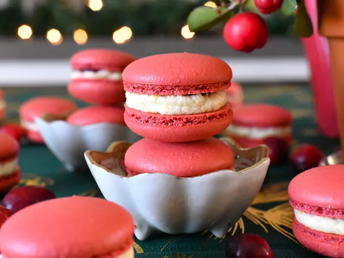

Macrons

Description
Macarons are delicate French cookies made from almond flour, egg whites, and sugar, filled with ganache, buttercream, or jam. They are known for their smooth, glossy shells and chewy texture.
Ingredients
- 1 cup almond flour
- 1 3/4 cups powdered sugar
- 3 large egg whites
- 1/4 cup granulated sugar
- 1/2 teaspoon vanilla extract
- Pinch of salt
- Food coloring (optional)
Instructions
- Preheat the oven to 300°F (150°C) and line a baking sheet with parchment paper.
- In a bowl, sift together almond flour and powdered sugar to remove lumps.
- In a separate bowl, beat egg whites until frothy, then gradually add granulated sugar while continuing to beat until stiff peaks form.
- Gently fold the dry ingredients into the egg whites until well combined. If using, add food coloring at this stage.
- Transfer the mixture to a piping bag and pipe small circles onto the prepared baking sheet.
- Let the piped macarons sit for about 30 minutes to form a skin.
- Bake for 15-20 minutes, or until the shells are firm and can be lifted off the parchment paper.
- Allow to cool completely before filling with your choice of ganache, buttercream, or jam.
- Sandwich two shells together with the filling and let them rest in the refrigerator for a few hours to allow the flavors to meld.
Home